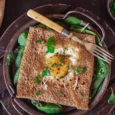

Galette Bretonne

Description
L'introduction de l'ingrédient principal de la galette bretonne est à aller chercher du côté des Croisades. Car c'est au 12ème siècle, en Asie, que les Croisés aperçoivent pour la première fois des fleurs roses qui s'étendent à perte de vue. Elles renferment un secret : le blé noir. Les Croisés s'empressent d'en rapporter des plants en Europe, mais s'aperçoivent rapidement que la culture de ce type de blé est loin d'être aisée. Sa production reste faible jusqu'à ce qu'il soit implanté sur des terres plus favorables : en Bretagne (où le climat est humide et doux et les terres plus acides). Un succès aux garnitures infinies, qui aujourd'hui s'accompagne souvent de cidre doux ou brut.
Pour: 6 personnes
Difficulté: Facile
Coût: $$$$
Ingrédients
- 250 g de farine de sarrasin
- sel
- 2 œufs
- 50 cl d'eau froide
- 40 g de beurre fondu
Garnitures
- beurre salé
- jambon blanc
- fromage rapé
- oeuf bio
Etapes de préparation
- Pour réaliser cette recette de galette bretonne commencer par préparer tous les ingrédients.
- Dans un cul de poule, mélanger la farine de sarrasin, le sel, les œufs, l'eau froide et le beurre fondu. Laisser reposer la pâte 2 heures. Cuire les crêpes dans une poêle à crêpe anti-adhésive ou sur une crêpière, afin d'obtenir des galettes aussi fines que possible.
- Commencer par faire fondre une noix de beurre dans le fond de la poêle.
- Y déposer une crêpe afin de la réchauffer.
- Parsemer dessus des dés de jambon blanc et du fromage râpé.
- Casser l'oeuf sur la galette.
- et laisser cuire jusqu'à ce que le fromage soit fondu et que l'oeuf soit cuit à votre convenance
- Replier les bords de la moitié de la galette bretonne et servir chaud
Bon appétit !
 Retour à la page principale
Retour à la page principale